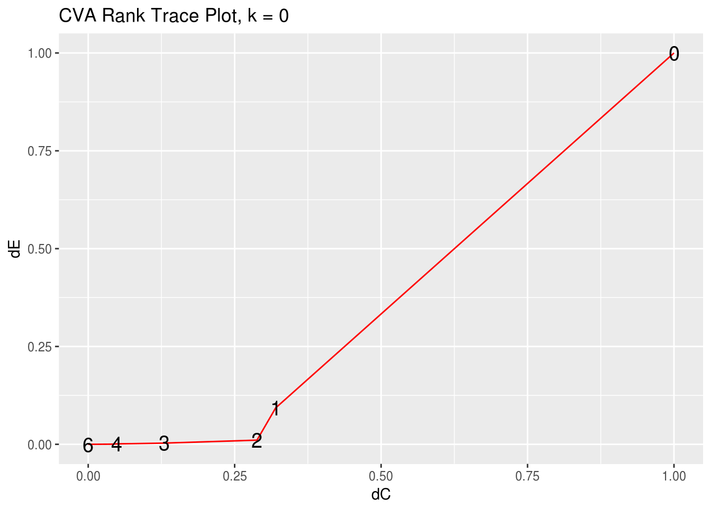

rrr for Multivariate Analysis
Chris Addy
2016-11-20
library(rrr)Reduced-Rank Regression
Classical Multivariate Regression
Let \(\mathbf{X} = \left(X_1, X_2, \dots, X_r\right)^\tau\) and \(\mathbf{Y} = \left(Y_1, Y_2, \dots, Y_s\right)^\tau\), i.e., \(\mathbf{X}\) is a random vector. The classical multivariate regression model is given by
\[ \overset{s \times 1}{\mathbf{Y}} = \overset{s \times 1}{\boldsymbol{\mu}} + \overset{s \times r}{\mathbf{C}} \; \overset{r \times 1}{\mathbf{X}} + \overset{s \times 1}{\varepsilon} \]
with
\[ \mathrm{E}\left(\varepsilon\right) = \mathbf{0}, \quad \mathrm{cov}\left(\varepsilon\right) = \mathbf{\Sigma}_{\varepsilon \varepsilon} \]
and \(\varepsilon\) is distributed independently of \(\mathbf{X}.\)
The least-squares estimator is given by
\[ \hat{\mathbf{C}} = \mathbf{\Sigma}_{YX} \mathbf{\Sigma}_{XX}^{-1} \]
Note that \(\hat{\mathbf{C}}\) contains no term that takes into the account the correlation of the \(Y_i\)s. This is a surprising result, since we would expect correlation, perhaps very heavy correlation, among the responses.
In other words, to find the least-squares estimate \(\hat{\mathbf{C}}\) of \(\mathbf{C}\), one need only regress \(\mathbf{X}\) separately on each \(Y_i\) and concatenate those multiple-regression coefficient vectors into a matrix to construct the estimated coefficient matrix \(\hat{\mathbf{C}}\).
The classical multivariate regression model is not truly multivariate.
Multivariate Regression: The Tobacco Data Set
library(dplyr)
data(tobacco)
tobacco <- as_data_frame(tobacco)
tobacco_x <- tobacco %>%
select(starts_with("X"))
tobacco_y <- tobacco %>%
select(starts_with("Y"))
## multivariate regression
x <- as.matrix(tobacco_x)
y <- as.matrix(tobacco_y)
multivar_reg <- t(cov(y, x) %*% solve(cov(x)))
## separate multiple regression
lm1 <- lm(y[,1] ~ x)$coeff
lm2 <- lm(y[,2] ~ x)$coeff
lm3 <- lm(y[,3] ~ x)$coeff
### compare multivariate regression and separate multiple regresions
multivar_reg## Y1.BurnRate Y2.PercentSugar Y3.PercentNicotine
## X1.PercentNitrogen 0.06197282 -4.3186662 0.5521620
## X2.PercentChlorine -0.16012848 1.3262863 -0.2785609
## X3.PercentPotassium 0.29211810 1.5899470 0.2175877
## X4.PercentPhosphorus -0.65798016 13.9526510 -0.7231067
## X5.PercentCalcium 0.17302593 0.5525913 0.3230914
## X6.PercentMagnesium -0.42834825 -3.5021083 2.0048603cbind(lm1, lm2, lm3)## lm1 lm2 lm3
## (Intercept) 1.41113730 13.6329133 -1.5648236
## xX1.PercentNitrogen 0.06197282 -4.3186662 0.5521620
## xX2.PercentChlorine -0.16012848 1.3262863 -0.2785609
## xX3.PercentPotassium 0.29211810 1.5899470 0.2175877
## xX4.PercentPhosphorus -0.65798016 13.9526510 -0.7231067
## xX5.PercentCalcium 0.17302593 0.5525913 0.3230914
## xX6.PercentMagnesium -0.42834825 -3.5021083 2.0048603The Reduced-Rank Regression Approach
One way to introduce a multivariate component into the model is to allow for the possibility that \(\mathbf{C}\) is deficient, or of reduced-rank \(t\).
\[ \mathrm{rank}\left(\mathbf{C}\right) = t \leq \mathrm{min}\left(r, s\right) \]
In other words, we allow for the possibility that there are unknown linear constraints on \(\mathbf{C}\).
Without loss of generality, we consider the case when there are more $ r > s$, i.e., \(t < s\).
When \(t = s\), the regression model is full-rank, and can be fit using multiple regression on each \(Y_i \in \mathbf{Y}.\) When \(t < s\), \(\mathbf{C}\) can be decomposed into non-unique matrices \(\mathbf{A}_{s \times t}\) and \(\mathbf{B}_{t \times r}\), such that \(\mathbf{C} = \mathbf{AB},\) and the multivariate regression model is given by
\[ \overset{s \times 1}{\mathbf{Y}} = \overset{s \times 1}{\boldsymbol{\mu}} + \overset{s \times t}{\mathbf{A}} \; \overset{t \times r}{\mathbf{B}} \; \overset{r \times 1}{\mathbf{X}} + \overset{s \times 1}{\varepsilon} \]}, $, and ultimately the reduced-rank regression coefficient \(\mathbf{C}^{\left(t\right)}\), is done by minimizing the weighted sum-of-squares criterion
\[ \mathrm{E}\left[\left(\mathbf{Y} - \boldsymbol{\mu} - \mathbf{ABX}\right)^\tau \mathbf{\Gamma}\left(\mathbf{Y} - \boldsymbol{\mu} - \mathbf{ABX}\right)\right] \]
where \(\boldsymbol{\Gamma}\) is a positive-definite symmetric \(\left(s \times s\right)\)-matrix of weights, the expectation of which is taken over the joint distribution \(\left(\mathbf{X}^\tau, \mathbf{Y}^\tau\right)^\tau\). This weighted sum-of-squares criterion is minimized when
\[ \begin{aligned} \boldsymbol{\mu}^\left(t\right) & = \boldsymbol{\mu}_Y - \mathbf{A}^{\left(t\right)}\mathbf{B}^{\left(t\right)}\boldsymbol{\mu}_X \\ \mathbf{A}^{\left(t\right)} & = \mathbf{\Gamma}^{-1/2}\mathbf{V}_t \\ \mathbf{B}^{\left(t\right)} & = \mathbf{V}_t^\tau \boldsymbol{\Gamma}^{-1/2}\mathbf{\Sigma}_{YX}\mathbf{\Sigma}_{XX}^{-1} \\ \end{aligned} \]
where \(\mathbf{V}_t = \left(\mathbf{v}_1, \dots, \mathbf{v}_t\right)\) is an \(\left(s \times t\right)\)-matrix, with \(\mathbf{v}_j\) the eigenvector associated with the \(j\)th largest eigenvalue of
\[ \mathbf{\Gamma}^{1/2}\mathbf{\Sigma}_{YX} \mathbf{\Sigma}_{XX}^{-1} \mathbf{\Sigma}_{XY} \mathbf{\Gamma}^{1/2} \]
In practice, we try out different values of \(\mathbf{\Gamma}\). Two popular choices – and ones that lead to interesting results as we will see – are \(\mathbf{\Gamma} = \mathbf{I}_r\) and \(\mathbf{\Gamma} = \boldsymbol{\Sigma}_{YY}^{-1}\).
Since the reduced-rank regression coefficient relies on inverting \(\boldsymbol{\Sigma}_{XX}\) and, possibly, \(\boldsymbol{\Sigma}_{YY}\), we want to take into consideration the cases when \(\boldsymbol{\Sigma}_{XX}, \boldsymbol{\Sigma}_{YY}\) are singular or difficult to invert.
Borrowing from ridge regression, we perturb the diagonal of the covariance matrices by some small constant, \(k\). Thus, we carry out the reduced-rank regression procedure using
\[ \begin{aligned} \hat{\boldsymbol{\Sigma}}_{XX}^{\left(k\right)} & = \hat{\boldsymbol{\Sigma}}_{XX} + k \mathbf{I}_r \\ \hat{\boldsymbol{\Sigma}}_{YY}^{\left(k\right)} & = \hat{\boldsymbol{\Sigma}}_{YY} + k \mathbf{I}_r \end{aligned} \]
Fit Reduced-Rank Regression with rrr()
The main function in the rrr package is – unsurprisingly – rrr()
rrr() takes as inputs the data frames, or matrices, of input and response variables, the weight matrix \(\mathbf{\Gamma}\), the rank (defaulted to full rank), the type of covariance matrix to be used (either covariance or correlation), and the ridge constant \(k\).
args(rrr)## function (x, y, gamma_matrix, rank = "full", type = "cov", k = 0)
## NULLrrr() returns a list containing the means \(\hat{boldsymbol{\mu}}\), the matrices \(\hat{\mathbf{A}}\), \(\hat{mathbf{B}}\), and the coefficient matrix \(\hat{\mathbf{C}}\)
### use the identity matrix for gamma
ident <- diag(1, dim(tobacco_y)[2])
rrr(tobacco_x, tobacco_y, ident, rank = "full") ## $mean
## [,1]
## [1,] 1.411137
## [2,] 13.632913
## [3,] -1.564824
##
## $A
## [,1] [,2] [,3]
## [1,] 0.03107787 -0.4704307 0.8818895
## [2,] -0.97005030 0.1984637 0.1400521
## [3,] 0.24090782 0.8598297 0.4501736
##
## $B
## X1.PercentNitrogen X2.PercentChlorine X3.PercentPotassium
## [1,] 4.3242696 -1.35864835 -1.4808316
## [2,] -0.4114869 0.09903401 0.3652138
## [3,] -0.3016163 -0.08086722 0.5782436
## X4.PercentPhosphorus X5.PercentCalcium X6.PercentMagnesium
## [1,] -13.729424 -0.4528289 3.86689562
## [2,] 2.456879 0.3060762 1.23030547
## [3,] 1.048309 0.3754285 0.03430168
##
## $C
## X1.PercentNitrogen X2.PercentChlorine X3.PercentPotassium
## [1,] 0.06197282 -0.1601285 0.2921181
## [2,] -4.31866620 1.3262863 1.5899470
## [3,] 0.55216201 -0.2785609 0.2175877
## X4.PercentPhosphorus X5.PercentCalcium X6.PercentMagnesium
## [1,] -0.6579802 0.1730259 -0.4283482
## [2,] 13.9526510 0.5525913 -3.5021083
## [3,] -0.7231067 0.3230914 2.0048603
##
## $eigen_values
## [1] 3.28209974 0.03782978 0.01015996We can see that rrr() with rank = "full" and k = 0 returns the classical multivariate regression coefficients as before. They differ only by a transpose, and is presented this way in rrr as a matter of convention. It is this form that is presented in the literature (Izenman, 2008).
Assess Effective Dimensionality and Ridge Constant with rank_trace
Since \(\hat{\mathbf{C}}\) is calculated using sample observations, its mathematical rank will always be full, but it will have a statistical rank \(t\) that is an unknown hyperparameter that
rank_trace(tobacco_x, tobacco_y, ident) ## # A tibble: 4 × 3
## ranks dC dEE
## <int> <dbl> <dbl>
## 1 0 1.00000000 1.000000000
## 2 1 0.20198327 0.011933691
## 3 2 0.08419093 0.003095346
## 4 3 0.00000000 0.000000000rank_trace_plot(tobacco_x, tobacco_y, ident)
Principle Components Analysis
data(pendigits)
digits <- as_data_frame(pendigits)
digits_class <- digits %>% dplyr::select(V35)
digits_features <- digits %>% dplyr::select(-V5, -V6)
digits_pca <- rrpca(digits_features)
pca_gof(digits_features) %>% round(4)## [1] 0.7143 0.4689 0.3080 0.2272 0.1695 0.1181 0.0870 0.0589 0.0408 0.0270
## [11] 0.0186 0.0120 0.0075 0.0039 0.0020 0.0007 0.0003 0.0000 0.0000 0.0000
## [21] 0.0000 0.0000 0.0000 0.0000 0.0000 0.0000 0.0000 0.0000 0.0000 0.0000
## [31] 0.0000 0.0000 0.0000 0.0000pca_rank_trace(digits_features)## # A tibble: 35 × 3
## rank delta_C delta_residuals
## <int> <dbl> <dbl>
## 1 0 1.0000000 1.00000000
## 2 1 0.9851844 0.71433119
## 3 2 0.9701425 0.46892679
## 4 3 0.9548637 0.30799061
## 5 4 0.9393364 0.22717008
## 6 5 0.9235481 0.16953413
## 7 6 0.9074852 0.11807750
## 8 7 0.8911328 0.08697453
## 9 8 0.8744746 0.05887330
## 10 9 0.8574929 0.04079132
## # ... with 25 more rowspca_rank_trace_plot(digits_features)
pc_pairwise_plot(digits_features, class_labels = digits_class)
#pc_plot_3D(digits_features, class_labels = digits_class)pc_allpairs_plot(digits_features, rank = 3, class_labels = digits_class)## `stat_bin()` using `bins = 30`. Pick better value with `binwidth`.
## `stat_bin()` using `bins = 30`. Pick better value with `binwidth`.
## `stat_bin()` using `bins = 30`. Pick better value with `binwidth`.
Canonical Variate Analysis
### COMBO-17 galaxy data
data(COMBO17)
galaxy <- as_data_frame(COMBO17) %>%
select(-starts_with("e."), -Nr, -UFS:-IFD) %>%
na.omit()
galaxy_x <- galaxy %>% select(-Rmag:-chi2red)
galaxy_y <- galaxy %>% select(Rmag:chi2red)
galaxy_x## # A tibble: 3,462 × 23
## UjMAG BjMAG VjMAG usMAG gsMAG rsMAG UbMAG BbMAG VnMAG S280MAG
## <dbl> <dbl> <dbl> <dbl> <dbl> <dbl> <dbl> <dbl> <dbl> <dbl>
## 1 -17.67 -17.54 -17.76 -17.83 -17.60 -17.97 -17.76 -17.53 -17.76 -18.22
## 2 -18.28 17.86 -18.20 -18.42 -17.96 -18.43 -18.36 -17.85 -18.19 -17.97
## 3 -19.75 -19.91 -20.41 -19.87 -20.05 -20.71 -19.82 -19.89 -20.40 -19.77
## 4 -17.83 -17.39 -17.67 -17.98 -17.47 -17.89 -17.92 -17.38 -17.67 -18.12
## 5 -17.69 -18.40 -19.37 -17.81 -18.69 -19.88 -17.76 -18.35 -19.37 -13.93
## 6 -19.22 -18.11 -18.70 -19.34 -18.27 -19.05 -19.30 -18.08 -18.69 -19.18
## 7 -17.09 -16.06 -16.23 -17.26 -16.11 -16.39 -17.19 -16.05 -16.22 -17.81
## 8 -16.87 -16.49 -17.01 -17.01 -16.64 -17.32 -16.95 -16.46 -17.01 -14.37
## 9 -17.67 -17.68 -17.87 -17.81 -17.63 -18.10 -17.76 -17.66 -17.86 -17.86
## 10 -11.63 -11.15 -11.32 -11.82 -11.16 -11.60 -11.73 -11.13 -11.31 -12.22
## # ... with 3,452 more rows, and 13 more variables: W420FE <dbl>,
## # W462FE <dbl>, W485FD <dbl>, W518FE <dbl>, W571FS <dbl>, W604FE <dbl>,
## # W646FD <dbl>, W696FE <dbl>, W753FE <dbl>, W815FS <dbl>, W856FD <dbl>,
## # W914FD <dbl>, W914FE <dbl>galaxy_y## # A tibble: 3,462 × 6
## Rmag ApDRmag mumax Mcz MCzml chi2red
## <dbl> <dbl> <dbl> <dbl> <dbl> <dbl>
## 1 24.995 0.935 24.214 0.832 1.400 0.64
## 2 25.013 -0.135 25.303 0.927 0.864 0.41
## 3 24.246 0.821 23.511 1.202 1.217 0.92
## 4 25.203 0.639 24.948 0.912 0.776 0.39
## 5 25.504 -1.588 24.934 0.848 1.330 1.45
## 6 23.740 -1.636 24.609 0.882 0.877 0.52
## 7 25.706 0.199 25.271 0.896 0.870 1.31
## 8 25.139 -0.310 25.376 0.930 0.877 1.84
## 9 24.699 0.268 24.611 0.774 0.821 1.03
## 10 24.849 0.399 24.264 0.062 0.055 0.55
## # ... with 3,452 more rowsrrcva(galaxy_x, galaxy_y, rank = 2, k = 0.0001)## $mean
## [,1]
## [1,] 26.9647035
## [2,] 0.7778445
## [3,] 25.8103529
## [4,] -0.7838949
## [5,] -0.7059124
## [6,] 2.1087757
##
## $G
## UjMAG BjMAG VjMAG usMAG gsMAG rsMAG
## [1,] 12.801398 0.030027684 -10.0136034 7.3781810 3.6563154 7.4920875
## [2,] -3.526777 0.007037918 -0.6006888 -0.1396253 0.1362222 0.4440037
## UbMAG BbMAG VnMAG S280MAG W420FE W462FE
## [1,] -20.863684 -0.09214493 -0.28762197 0.114366840 -80.577920 -45.925360
## [2,] 3.573287 -0.01097271 0.01701159 0.004312253 -3.552204 -2.571896
## W485FD W518FE W571FS W604FE W646FD W696FE
## [1,] 12.502665 53.802839 36.09168 3.096505 -8.390231 -42.9136538
## [2,] 4.118007 1.729646 1.42660 2.451877 -3.999906 -0.8652682
## W753FE W815FS W856FD W914FD W914FE
## [1,] 34.1142186 -36.60718 -13.4812757 19.003834 2.4553493
## [2,] 0.8532394 -3.14504 -0.2666507 1.330534 0.7642494
##
## $H
## [,1] [,2] [,3] [,4] [,5] [,6]
## [1,] 1.39453594 0.2106292 1.04963650 0.09485012 0.1111437 -0.007471155
## [2,] -0.06686816 -0.1051414 0.07012137 0.31449831 0.3135059 -0.177456306
##
## $eigen_values
## [1] 5.418825e+00 3.944920e-02 5.038764e-03 8.993002e-04 3.712448e-05
## [6] 1.101363e-05canonical_cov(galaxy_x, galaxy_y, rank = 3, k = 0.0001)## xi1 xi2 xi3 omega1 omega2 omega3
## xi1 0.938634 0.0000000 0.00000000 0.938634 0.0000000 0.00000000
## xi2 0.000000 0.4695783 0.00000000 0.000000 0.4695783 0.00000000
## xi3 0.000000 0.0000000 0.07553122 0.000000 0.0000000 0.07553122
## omega1 0.938634 0.0000000 0.00000000 1.000000 0.0000000 0.00000000
## omega2 0.000000 0.4695783 0.00000000 0.000000 1.0000000 0.00000000
## omega3 0.000000 0.0000000 0.07553122 0.000000 0.0000000 1.00000000canonical_corr(galaxy_x, galaxy_y, rank = 3, k = 0.0001)## xi1 xi2 xi3 omega1 omega2 omega3
## xi1 1.0000000 0.0000000 0.0000000 0.9688312 0.0000000 0.0000000
## xi2 0.0000000 1.0000000 0.0000000 0.0000000 0.6852579 0.0000000
## xi3 0.0000000 0.0000000 1.0000000 0.0000000 0.0000000 0.2748294
## omega1 0.9688312 0.0000000 0.0000000 1.0000000 0.0000000 0.0000000
## omega2 0.0000000 0.6852579 0.0000000 0.0000000 1.0000000 0.0000000
## omega3 0.0000000 0.0000000 0.2748294 0.0000000 0.0000000 1.0000000cva_rank_trace(galaxy_x, galaxy_y)## # A tibble: 7 × 3
## ranks dC dEE
## <int> <dbl> <dbl>
## 1 0 1.00000000 1.0000000000
## 2 1 0.31997913 0.0929573793
## 3 2 0.28812548 0.0106490385
## 4 3 0.12985784 0.0031004613
## 5 4 0.04836781 0.0010833504
## 6 5 0.04004294 0.0004057821
## 7 6 0.00000000 0.0000000000cva_rank_trace_plot(galaxy_x, galaxy_y)
cva_rank_trace_plot(galaxy_x, galaxy_y, k = 0.0001)
Linear Discriminant Analysis
### create training and test sets
set.seed(12345)
num_obs <- dim(digits)[1]
train_number <- floor(.75 * num_obs)
train_index <- sample(num_obs, train_number)
### training set
train_digits_features <- digits_features[train_index, ]
train_digits_class <- digits_class[train_index, ]
### test set
test_digits_features <- digits_features[-train_index, ]
test_digits_class <- digits_class[-train_index, ]